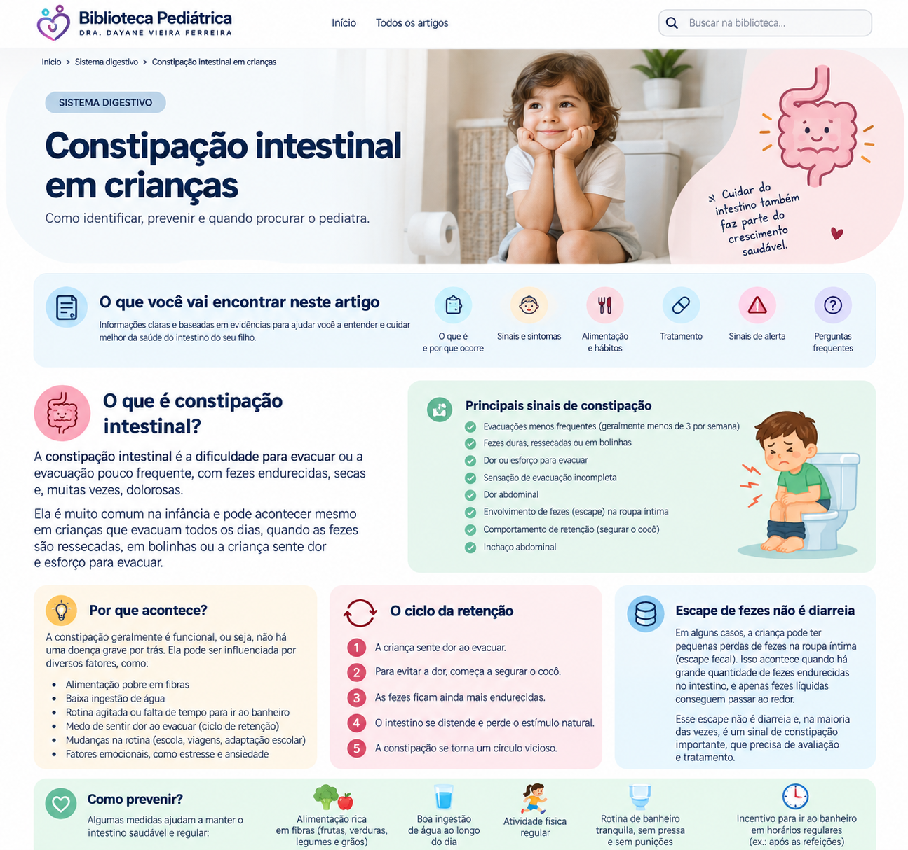

Constipação intestinal em crianças
Fezes duras, dor para evacuar, retenção e escapes na roupa: entenda os sinais, o que pode ajudar e quando procurar o pediatra.
Como perceber a constipação?
Os sinais variam conforme a idade. Além de evacuar poucas vezes, é importante observar a consistência das fezes, a dor e o comportamento da criança.
Sinais comuns
- fezes duras ou em pequenas bolinhas;
- dor ou esforço para evacuar;
- fezes muito grandes e espaçadas;
- dor abdominal que pode melhorar após evacuar.
Comportamento de retenção
Algumas crianças cruzam ou esticam as pernas, ficam na ponta dos pés, contraem o corpo ou se escondem. Pode parecer esforço para evacuar, mas muitas vezes é uma tentativa de segurar as fezes.
Por que a criança começa a prender o cocô?
Um episódio de evacuação dolorosa pode fazer a criança ter medo de evacuar novamente. Ela segura as fezes; quanto mais tempo elas permanecem no intestino, mais endurecidas podem ficar. A próxima evacuação dói novamente e o ciclo se repete.
Escape de fezes na roupa pode ser constipação?
Sim. Quando há grande acúmulo de fezes no reto, material mais amolecido pode passar ao redor desse conteúdo e escapar involuntariamente. Isso pode ser confundido com diarreia ou interpretado como se a criança estivesse fazendo de propósito.
Se isso estiver acontecendo repetidamente, vale conversar com o pediatra para avaliar a presença de retenção fecal.
O que pode ajudar no dia a dia?
Rotina sem pressão
Para crianças que já usam o vaso, uma rotina tranquila de banheiro pode ajudar. Evite broncas, punições ou constrangimento. Apoio e incentivo são mais adequados.
Postura confortável
Quando os pés não alcançam o chão, um apoio firme pode deixar a criança mais estável e confortável para evacuar.
Alimentação
Uma alimentação equilibrada com frutas, verduras, legumes, cereais integrais e outras fontes de fibras faz parte dos cuidados.
Líquidos e movimento
Ingestão adequada de líquidos e atividade física compatível com a idade também fazem parte de hábitos intestinais saudáveis.
Precisa usar laxante?
Em algumas crianças, sim, mas a indicação depende da avaliação clínica. Quando existe acúmulo importante de fezes, pode ser necessário primeiro tratar essa retenção e depois manter as fezes macias por um período.
O tratamento pode levar semanas ou meses e não deve ser interrompido abruptamente sem orientação. Por isso, este artigo não apresenta medicamentos nem doses: o esquema deve ser individualizado para cada criança.
Quando procurar avaliação médica com prioridade?
Alguns sinais não combinam com a forma funcional mais comum de constipação e precisam de avaliação profissional. Procure atendimento especialmente diante de:
- constipação presente desde o nascimento ou nas primeiras semanas de vida;
- recém-nascido a termo que demorou mais de 48 horas para eliminar o mecônio;
- abdome muito distendido associado a vômitos;
- crescimento ou ganho de peso inadequados;
- fraqueza nas pernas, alteração para caminhar ou outros sinais neurológicos novos;
- fezes persistentemente muito estreitas, em formato de fita, especialmente em bebês;
- piora importante do estado geral ou qualquer situação que preocupe muito a família.
Quando marcar consulta com o pediatra?
Vale procurar avaliação quando as evacuações dolorosas ou endurecidas se repetem, a criança passa a reter fezes, apresenta escapes frequentes na roupa, há sangue associado a fezes duras, dor abdominal recorrente ou o problema não melhora com medidas simples.
Na maioria dos casos, a constipação infantil é funcional, mas a história e o exame ajudam a identificar quando é necessário investigar outras causas.
Perguntas frequentes
A criança precisa evacuar todos os dias?
Não. A frequência varia. É mais importante observar se as fezes estão macias, se a evacuação ocorre sem dor e se não há retenção ou outros sintomas.
Mais fibras resolvem sempre?
Não. Uma alimentação equilibrada é importante, mas diretrizes não recomendam tratar a constipação estabelecida apenas com mudanças na dieta.
Escape na roupa é “preguiça”?
Não deve ser tratado dessa forma. O escape pode ocorrer involuntariamente quando existe retenção e acúmulo de fezes.
O tratamento pode demorar?
Sim. Em alguns casos, recuperar um hábito intestinal confortável e regular pode levar vários meses e exigir acompanhamento.
Resumo visual
Salve este infográfico para consultar os principais pontos sobre constipação intestinal em crianças.

Fontes e revisão
Conteúdo baseado em orientações da Sociedade Brasileira de Pediatria (SBP), NICE e recomendações de gastroenterologia pediátrica ESPGHAN/NASPGHAN.
SBP — Constipação intestinal (atualizado em agosto/2025)
NICE — Constipation in children and young people: recommendations
NASPGHAN — Clinical Guidelines: Functional Constipation
Última revisão: setembro de 2026.